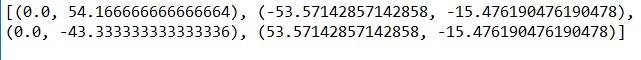

可得横截面上的压应力
由于中性轴把整个截面分为两部分，其中一部分只受到拉力的作用，另一部分只受到压力的作用。那么当中性轴与截面边界相切 时，所确定的力的作用点也就是截面核心边界上一点，由此便可以确定出截面核心区域。
这自然会引出一个问题，若截面边界存在尖角，也就是切线不只一条，怎么办。
2.设计思路
希望用python自带的turtle库绘制出任给截面的截面核心
若截面边界为曲线，由于曲线的方程难以给出，截面的各个参数难以求出，截面切线也难以寻找。故考虑使用直线段与圆弧近似所需图形。
由于在实际工程问题中不需要求出精确度极高的解，为简化算法，圆弧段也可用直线段去近似。
2.1程序的输入参数
用户需按逆时针方向依次把截面的节点和半径输入一个列表中，这句话不太好理解，下面举例说明。
列表s=[(100,0,200),(-100,0),(-100,-200,-100),(100,-200)]中
第一个元素表示turtle小乌龟从(100,0）点出发，其运动轨迹的曲率半径是200，200为正数代表相对圆心的绕行方向为逆
时针（若为负数，则为顺时针），该段圆弧的终点坐标为下一个元素的前两位，即(-100,0)。
2.2程序输出结果
程序运行结束后会输出截面边界的图像，以及截面核心区域，其用绿色填充。并在spyder界面的输出框中输出截面核心的边界节点坐
标。
2.3程序大致流程
- 将输入的列表转换成只含有坐标的列表。其中圆弧的处理方式是，将其十等分，然后记录这些节点的坐标。该部由函数 to_standard_s()实现。
- 计算出截面的参数：面积S，惯性矩
4.找出截面所有的切线。（难点）
5.找到切线对应的截面核心区域的边界点。
3.创新性描述
1.用线段和圆弧段近似复杂曲线段，简化了算法。
2.独立推导出了，由多边形顶点坐标计算惯
注：这里的切线是指恰好与图形相接触的直线，非数学意义上的切线。
如下图中直线a为该算法所求切线，直线b并不是这里所谓的切线。
.jpg)
该算法的简要思想为，依次判别多边形每个节点相互之间的连线是否为切线。判断的标准是，若其余的所有节点均在该直线的同侧，则该直线为该 图形的切线。
具体算法可参见程序中的find_tangent()函数
4.并未找到其他可以实现该功能的程序，故该程序算法大概率为本人首创。
4.参数设置和运行方法
将截面形状的坐标按照规定（参见该文档2.1）输入列表后，赋值给程序263行的s，点击运行按钮，即可获得结果。
程序251至260行的列表s1-s10可供程序测试和老师检查使用。
5.运行结果
令s=s1=[(0,0),(400,0),(300,300),(100,300)],可得运行结果如下，截面核心节点坐标为相
对于质心的坐标

令s=s3=[(0,0),(300,0),(300,250,150),(0,250)]，可得运行结果如下
令s=s6=[(50,0),(150,0),(150,200),(200,200),(200,300),(0,300),
(0,200),(50,200)],可 得运行结果如下
与标准答案对比可见该程序运行结果正确
6.学习心得与收获
通过与大一所学的C语言的对比学习，我体会到了python语言的便捷与灵活。虽然python的运行效率不如C语言，但由于其可
以调用的库十分丰富，可以实现的功能也更加强大。虽然本次大作业的思路在我的心中已经酝酿了很久，但真正动手写程序的时候总是漏洞百
出。但是当自己写出的程序可以顺利运行，并且输出正确的结果时，内心的成就感是无与伦比的。本学期的学习中令我印象最深刻的内容是类
的概念以及面向对象的编程。我大一学习C语言的时候从未接触过面向对象的编程，这学期学习并且理解后发现面向对象的编程可以实现很多
面向过程的编程做不到的功能，我从未想到竟然有这样的编程方法，我感到学到了新的知识，十分兴奋。
7.参考文献
[1]刘鸿文.材料力学 I[M].第 6 版. 北京:高等教育出版社,2017.
[2]任意单连通多边形截面惯性矩的计算研究 晏 钊 陈小亮 牟亚清
[3]任苇.任意形状平面几何图形几何特性的数值分析求解及工 程应用[J].西北水力发电,2005(S1):72-74.
[4]Python科学计算基础 罗奇鸣